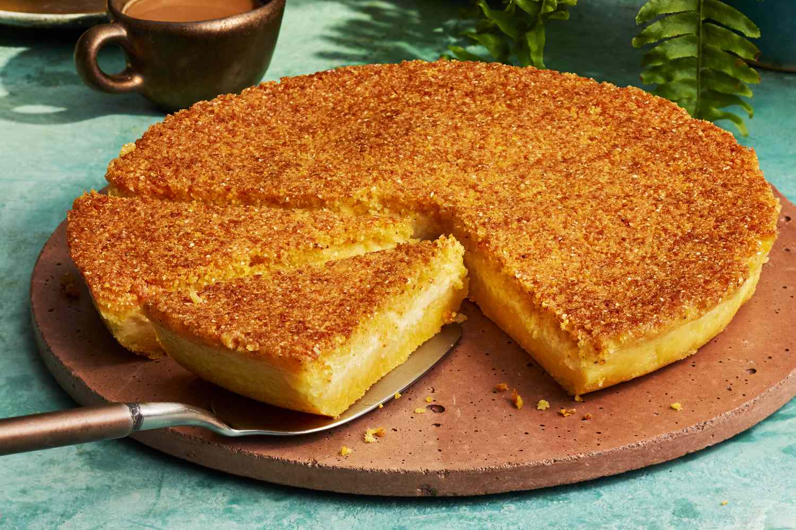

🏠 Home Page
Creamy Cornmeal Cake 🍰

Description
A creamy cornmeal cake is a soft, moist dessert made from cornmeal, sugar, butter, and milk, creating a rich, custard-like texture. It is often flavored with vanilla or a hint of citrus for added depth.
This cake offers a delightful balance of sweetness and a subtle corn flavor, with a dense yet tender crumb. Cornmeal provides dietary fiber, while the butter and milk contribute healthy fats and calcium.
Perfect as a light snack or dessert, this cake is a comforting treat, with its simple ingredients creating a satisfying dessert that can be enjoyed by all ages.
Ingredients
- Cornmeal - 190g
- Milk - 720ml
- Butter - 90g
- Grated Parmesan Cheese - 90g
- Condensed Milk - 295g
- Eggs - 3
- Baking Powder - 15g
- Flour - 15g
- Salt
Steps
- Preheat the oven to 1800C.
- Grease the baking tray with butter and cornmeal.
- Place 720ml of Milk and 295g of condensed milk in a blender.
- Add 3 Eggs, 30g of butter and 90g of grated parmesan cheese. Blend for 1 min until combined
- Transfer the mixture to a large bowl and add 190g of Cornmeal.
- Add 15g of all purpose flour and pinch of salt. Mix and combine.
- Add 15g of baking powder and mix to combine.
- Transfer the batter to greased baking tray and bake for 30 min until golden brown.
- Enjoy the Creamy Cornmeal cake!!!